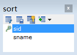

原文连接:https://www.cnblogs.com/liuhui0308/p/11657810.html
1. 数据库
1.1 数据库概述
什么是数据库
数据库就是存储数据的仓库，其本质是一个文件系统，数据按照特定的格式将数据存储起来，用户可以对数据库中的数据进行增加，修改，删除及查询操作。
什么是数据库管理系统
数据库管理系统（DataBase Management System，DBMS）：指一种操作和管理数据库的大型软件，用于建立、使用和维护数据库，对数据库进行统一管理和控制，以保证数据库的安全性和完整性。用户通过数据库管理系统访问数据库中表内的数据。
常见的数据库管理系统
MYSQL ：开源免费的数据库，小型的数据库.已经被Oracle收购了.MySQL6.x版本也开始收费。
Oracle ：收费的大型数据库，Oracle公司的产品。Oracle收购SUN公司，收购MYSQL。
DB2 ：IBM公司的数据库产品,收费的。常应用在银行系统中.
SQLServer：MicroSoft 公司收费的中型的数据库。C#、.net等语言常使用。
SyBase ：已经淡出历史舞台。提供了一个非常专业数据建模的工具PowerDesigner。
SQLite : 嵌入式的小型数据库，应用在手机端。
Java相关的数据库：MYSQL，Oracle．
这里使用MySQL数据库。MySQL中可以有多个数据库，数据库是真正存储数据的地方。
数据库与数据库管理系统的关系
1.2 数据库表
数据库中以表为组织单位存储数据。
表类似我们的Java类，每个字段都有对应的数据类型。
那么用我们熟悉的java程序来与关系型数据对比，就会发现以下对应关系。
类----------表
类中属性----------表中字段
对象----------记录
1.3 表数据
根据表字段所规定的数据类型，我们可以向其中填入一条条的数据，而表中的每条数据类似类的实例对象。表中的一行一行的信息我们称之为记录。
表记录与java类对象的对应关系
2. MySql数据库
2.1 MySql安装
安装后，MySQL会以windows服务的方式为我们提供数据存储功能。开启和关闭服务的操作：右键点击我的电脑→管理→服务→可以找到MySQL服务开启或停止。
也可以在DOS窗口，通过命令完成MySQL服务的启动和停止（必须以管理运行cmd命令窗口）
2.2 登录MySQL数据库
MySQL是一个需要账户名密码登录的数据库，登陆后使用，它提供了一个默认的root账号，使用安装时设置的密码即可登录。
格式1：cmd> mysql –u用户名 –p密码
例如：mysql -uroot –proot
格式2：cmd> mysql --host=ip地址 --user=用户名 --password=密码
例如：mysql --host=127.0.0.1 --user=root --password=root2.3 SQLyog（MySQL图形化开发工具）
安装：
提供的SQLyog软件为免安装版，可直接使用
使用：
输入用户名、密码，点击连接按钮，进行访问MySQL数据库进行操作
在Query窗口中，输入SQL代码，选中要执行的SQL代码，按F8键运行，或按执行按钮运行。
3. SQL语句
数据库是不认识JAVA语言的，但是我们同样要与数据库交互，这时需要使用到数据库认识的语言SQL语句，它是数据库的代码。
结构化查询语言(Structured Query Language)简称SQL，是一种数据库查询和程序设计语言，用于存取数据以及查询、更新和管理关系数据库系统。
创建数据库、创建数据表、向数据表中添加一条条数据信息均需要使用SQL语句。
3.1 SQL语句
SQL分类：
数据定义语言：简称DDL(Data Definition Language)，用来定义数据库对象：数据库，表，列等。关键字：create，alter，drop等
数据操作语言：简称DML(Data Manipulation Language)，用来对数据库中表的记录进行更新。关键字：insert，delete，update等
数据控制语言：简称DCL(Data Control Language)，用来定义数据库的访问权限和安全级别，及创建用户。
数据查询语言：简称DQL(Data Query Language)，用来查询数据库中表的记录。关键字：select，from，where等
3.2 SQL通用语法
SQL语句可以单行或多行书写，以分号结尾
可使用空格和缩进来增强语句的可读性
MySQL数据库的SQL语句不区分大小写，建议使用大写，例如：SELECT * FROM user。
同样可以使用/**/的方式完成注释
MySQL中的我们常使用的数据类型如下
详细的数据类型如下(不建议详细阅读！)
|
分类 |
类型名称 |
说明 |
|
整数类型
|
tinyInt |
很小的整数 |
|
smallint |
小的整数 |
|
|
mediumint |
中等大小的整数 |
|
|
int(integer) |
普通大小的整数 |
|
|
小数类型
|
float |
单精度浮点数 |
|
double |
双精度浮点数 |
|
|
decimal（m,d） |
压缩严格的定点数 |
|
|
日期类型
|
year |
YYYY 1901~2155 |
|
time |
HH:MM:SS -838:59:59~838:59:59 |
|
|
date |
YYYY-MM-DD 1000-01-01~9999-12-3 |
|
|
datetime |
YYYY-MM-DD HH:MM:SS 1000-01-01 00:00:00~ 9999-12-31 23:59:59 |
|
|
timestamp |
YYYY-MM-DD HH:MM:SS 1970~01~01 00:00:01 UTC~2038-01-19 03:14:07UTC |
|
|
文本、二进制类型
|
CHAR(M) |
M为0~255之间的整数 |
|
VARCHAR(M) |
M为0~65535之间的整数 |
|
|
TINYBLOB |
允许长度0~255字节 |
|
|
BLOB |
允许长度0~65535字节 |
|
|
MEDIUMBLOB |
允许长度0~167772150字节 |
|
|
LONGBLOB |
允许长度0~4294967295字节 |
|
|
TINYTEXT |
允许长度0~255字节 |
|
|
TEXT |
允许长度0~65535字节 |
|
|
MEDIUMTEXT |
允许长度0~167772150字节 |
|
|
LONGTEXT |
允许长度0~4294967295字节 |
|
|
VARBINARY(M) |
允许长度0~M个字节的变长字节字符串 |
|
|
BINARY(M) |
允许长度0~M个字节的定长字节字符串 |
3.3 数据库操作：database
创建数据库
格式:
* create database 数据库名;
* create database 数据库名 character set 字符集;例如：
#创建数据库 数据库中数据的编码采用的是安装数据库时指定的默认编码 utf8
CREATE DATABASE day21_1;
#创建数据库 并指定数据库中数据的编码
CREATE DATABASE day21_2 CHARACTER SET utf8;
查看数据库
查看数据库MySQL服务器中的所有的数据库:
show databases;查看某个数据库的定义的信息:
show create database 数据库名;例如：
show create database day21_1;删除数据库
drop database 数据库名称;例如：
drop database day21_2;其他的数据库操作命令
切换数据库：
use 数据库名;例如：
use day21_1;查看正在使用的数据库:
select database();3.4 表结构相关语句
3.4.1 创建表
格式：
create table 表名(
字段名 类型(长度) 约束,
字段名 类型(长度) 约束
);例如：
###创建分类表
CREATE TABLE sort (
sid INT, #分类ID
sname VARCHAR(100) #分类名称
);3.4.2 主键约束
主键是用于标识当前记录的字段。它的特点是非空，唯一。在开发中一般情况下主键是不具备任何含义，只是用于标识当前记录。
格式：
1.在创建表时创建主键，在字段后面加上 primary key.
create table tablename(
id int primary key,
.......
)2. 在创建表时创建主键，在表创建的最后来指定主键
create table tablename(
id int，
.......，
primary key(id)
)3.删除主键：alter table 表名 drop primary key;
alter table sort drop primary key;4.主键自动增长：一般主键是自增长的字段，不需要指定。
实现添加自增长语句,主键字段后加auto_increment(只适用MySQL)例如：
###创建分类表
CREATE TABLE sort (
sid INT PRIMARY KEY auto_increment, #分类ID
sname VARCHAR(100) #分类名称
);
其他约束：其他约束还有如外键、唯一、非空等，会在就业班详细介绍。
3.4.3 查看表
查看数据库中的所有表：
格式：show tables;查看表结构：
格式：desc 表名;
例如：desc sort;3.4.4 删除表
格式：drop table 表名;
例如：drop table sort;3.4.5 修改表结构格式：
alter table 表名 add 列名 类型(长度) 约束;
作用：修改表添加列.
例如：
#1，为分类表添加一个新的字段为 分类描述 varchar(20)
ALTER TABLE sort ADD sdesc VARCHAR(20);alter table 表名 modify 列名 类型(长度) 约束;
作用：修改表修改列的类型长度及约束.
例如：
#2, 为分类表的分类名称字段进行修改，类型varchar(50) 添加约束 not null
ALTER TABLE sort MODIFY sname VARCHAR(50) NOT NULL;alter table 表名 change 旧列名 新列名 类型(长度) 约束;
作用：修改表修改列名.
例如：
#3, 为分类表的分类名称字段进行更换 更换为 snamesname varchar(30)
ALTER TABLE sort CHANGE sname snamename VARCHAR(30);alter table 表名 drop 列名;
作用：修改表删除列.
例如：
#4, 删除分类表中snamename这列
ALTER TABLE sort DROP snamename;rename table 表名 to 新表名;
作用：修改表名
例如：
#5, 为分类表sort 改名成 category
RENAME TABLE sort TO category;alter table 表名 character set 字符集;
作用：修改表的字符集
例如：
#6, 为分类表 category 的编码表进行修改，修改成 gbk
ALTER TABLE category CHARACTER SET gbk;3.4.6 插入表记录：
语法：
insert into 表 (列名1,列名2,列名3..) values (值1,值2,值3..); -- 向表中插入某些列
insert into 表 values (值1,值2,值3..); --向表中插入所有列注意：
插入的数据应与字段的数据类型相同
数据的大小应该在列的长度范围内
在values中列出的数据位置必须与被加入列的排列位置相对应。
除了数值类型外，其它的字段类型的值必须使用引号引起。
如果要插入空值，可以不写字段，或者插入 null。
对于自动增长的列在操作时，直接插入null值即可。
例如：
INSERT INTO sort(sid,sname) VALUES('s001', '电器');
INSERT INTO sort(sid,sname) VALUES('s002', '服饰');
INSERT INTO sort VALUES('s003', '化妆品');
INSERT INTO sort VALUES('s004','书籍');3.4.7 更新表记录：
用来修改指定条件的数据，将满足条件的记录指定列修改为指定值
语法：
update 表名 set 字段名=值,字段名=值;
update 表名 set 字段名=值,字段名=值 where 条件;注意：
列名的类型与修改的值要一致.
修改值得时候不能超过最大长度.
值如果是字符串或者日期需要加’’.
例如：
#1，将指定的sname字段中的值 修改成 日用品
UPDATE sort SET sname='日用品';
#2, 将sid为s002的记录中的sname改成 日用品
UPDATE sort SET sname='日用品' WHERE sid='s002';
UPDATE sort SET sname='日用品' WHERE sid='s003';3.4.8 删除记录：delete
语法：
delete from 表名 [where 条件];
或者
truncate table 表名;面试题：
删除表中所有记录使用delete from 表名; 还是用truncate table 表名;
删除方式：delete 一条一条删除，不清空auto_increment记录数。
truncate 直接将表删除，重新建表，auto_increment将置为零，从新开始。例如：
DELETE FROM sort WHERE sname='日用品';
#表数据清空
DELETE FROM sort;3.5 DOS操作数据乱码解决
我们在dos命令行操作中文时，会报错
insert into user(username,password) values(‘张三’,’123’);
ERROR 1366 (HY000): Incorrect string value: '\xD5\xC5\xC8\xFD' for column 'username' at row 1原因:因为mysql的客户端编码的问题我们的是utf8,而系统的cmd窗口编码是gbk
解决方案（临时解决方案）:修改mysql客户端编码。
show variables like 'character%'; 查看所有mysql的编码数据库、表及表数据、SQL语句13.png)
在图中与客户端有关的编码设置:
client connetion result 和客户端相关
database server system 和服务器端相关
将客户端编码修改为gbk.
set character_set_results=gbk; / set names gbk;以上操作，只针对当前窗口有效果，如果关闭了服务器便失效。如果想要永久修改，通过以下方式:
在mysql安装目录下有my.ini文件
default-character-set=gbk 客户端编码设置
character-set-server=utf8 服务器端编码设置注意:修改完成配置文件，重启服务
4. SQL查询语句
查询语句，在开发中使用的次数最多，此处使用“zhangwu” 账务表。
创建账务表：
CREATE TABLE zhangwu (
id INT PRIMARY KEY AUTO_INCREMENT, -- 账务ID
name VARCHAR(200), -- 账务名称
money DOUBLE, -- 金额
);插入表记录：
INSERT INTO zhangwu(id,name,money) VALUES (1,'吃饭支出',247);
INSERT INTO zhangwu(id,name,money) VALUES (2,'工资收入',12345);
INSERT INTO zhangwu(id,name,money) VALUES (3,'服装支出',1000);
INSERT INTO zhangwu(id,name,money) VALUES (4,'吃饭支出',325);
INSERT INTO zhangwu(id,name,money) VALUES (5,'股票收入',8000);
INSERT INTO zhangwu(id,name,money) VALUES (6,打麻将支出,8000);
INSERT INTO zhangwu(id,name,money) VALUES (7,null,5000);4.1 查询的语法：
查询指定字段信息
select 字段1,字段2,...from 表名;例如：
select id,name from zhangwu;查询表中所有字段
select * from 表名; 例如：
select * from zhangwu;注意:使用"*"在练习、学习过程中可以使用，在实际开发中，不推荐使用。原因，要查询的字段信息不明确，若字段数量很多，会导致查询速度很慢。
distinct用于去除重复记录
select distinct 字段 from 表名; 例如：
select distinct money from zhangwu;别名查询，使用的as关键字，as可以省略的.
别名可以给表中的字段，表设置别名。 当查询语句复杂时，使用别名可以极大的简便操作。
表别名格式:
select * from 表名 as 别名;
或
select * from 表名 别名;
列别名格式：
select 字段名 as 别名 from 表名;
或
select 字段名 别名 from 表名;例如
表别名：
select * from zhangwu as zw;
列别名：
select money as m from zhangwu;
或
select money m from zhangwu;我们在sql语句的操作中，可以直接对列进行运算。
例如：将所有账务的金额+10000元进行显示.
select pname,price+10000 from product;4.2 条件查询
where语句表条件过滤。满足条件操作，不满足不操作，多用于数据的查询与修改。
格式 :select 字段 from 表名 where 条件;
while条件的种类如下：
|
比较运算符
|
> < <= >= = <> |
大于、小于、大于(小于)等于、不等于 |
|
BETWEEN ...AND... |
显示在某一区间的值(含头含尾) |
|
|
IN(set) |
显示在in列表中的值，例：in(100,200) |
|
|
LIKE 通配符 |
模糊查询，Like语句中有两个通配符： % 用来匹配多个字符；例first_name like ‘a%’; _ 用来匹配一个字符。例first_name like ‘a_’; |
|
|
IS NULL |
判断是否为空 is null; 判断为空 is not null; 判断不为空 |
|
|
逻辑运算符
|
and |
多个条件同时成立 |
|
or |
多个条件任一成立 |
|
|
not |
不成立，例：where not(salary>100); |
例如：
查询所有吃饭支出记录
SELECT * FROM zhangwu WHERE name = '吃饭支出';查询出金额大于1000的信息
SELECT * FROM zhangwu WHERE money >1000;查询出金额在2000-5000之间的账务信息
SELECT * FROM zhangwu WHERE money >=2000 AND money <=5000;
或
SELECT * FROM zhangwu WHERE money BETWEEN 2000 AND 5000;查询出金额是1000或5000或3500的商品信息
SELECT * FROM zhangwu WHERE money =1000 OR money =5000 OR money =3500;
或
SELECT * FROM zhangwu WHERE money IN(1000,5000,3500);查询出账务名称包含”支出”的账务信息。
SELECT * FROM zhangwu WHERE name LIKE "%支出%";查询出账务名称中是无五个字的账务信息
SELECT * FROM gjp_ledger WHERE ldesc LIKE "_____"; -- 五个下划线_查询出账务名称不为null账务信息
SELECT * FROM zhangwu WHERE name IS NOT NULL;
SELECT * FROM zhangwu WHERE NOT (name IS NULL);